V5 ART LOCK · только UI-полировка. TEST: 2.15.33-bc52be687115. Эффекты — отдельно DEV, не замена TEST. Подробный отчёт / QA
Старая неизменяемая V5.1 runtime / новая V5.2. Длинные имена: только горизонтальный ellipsis. Вертикальная строка больше не сжимается.
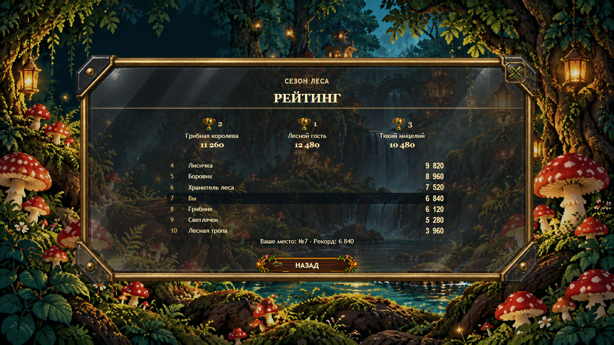
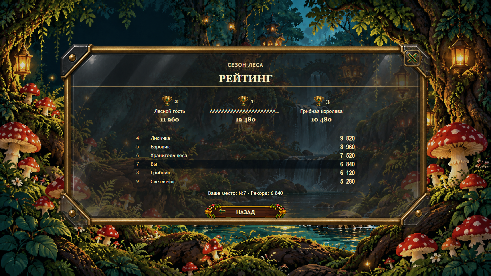
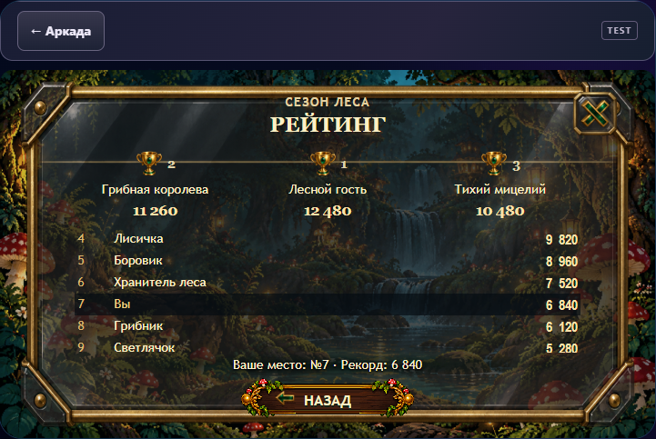
Авторитетная заявка / скрытые неизвестные поля. Иллюстрация ниже содержит явно обозначенные TEST fixture values, не реальные данные игрока.
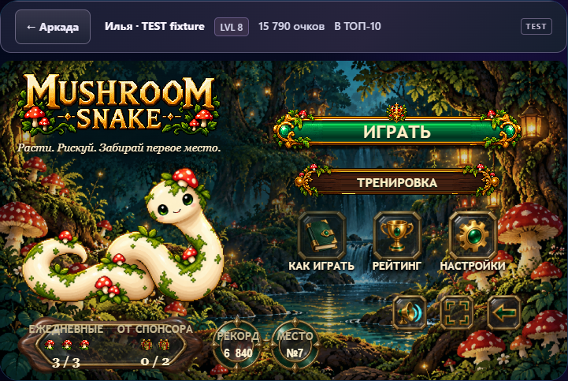
Отдельные колонки, 3 mushrooms / 2 gifts, исходные счётчики и контракты без изменений.
Render-only stress fixture, не изменение рейтинга. Измеренный текст ≥16px. При нехватке безопасного центра появляется небольшая прикреплённая dark-glass/brass plate.
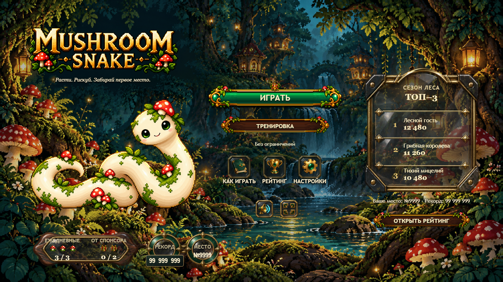
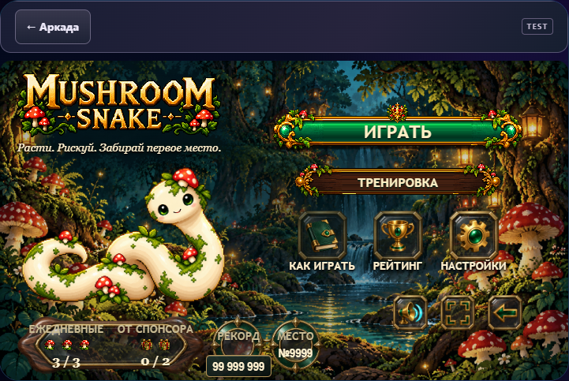
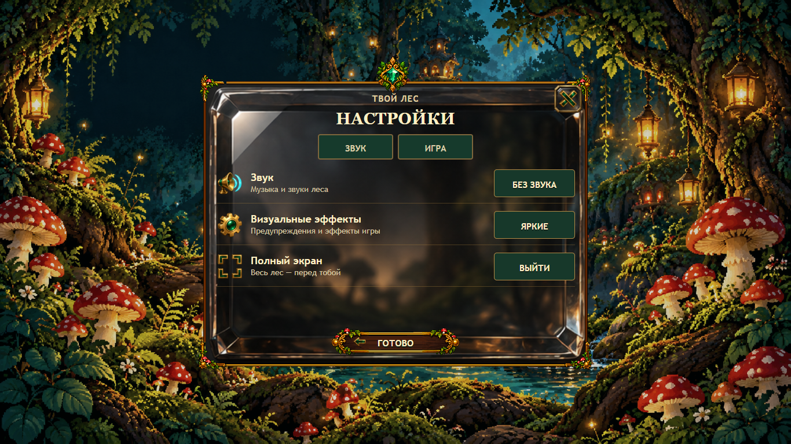
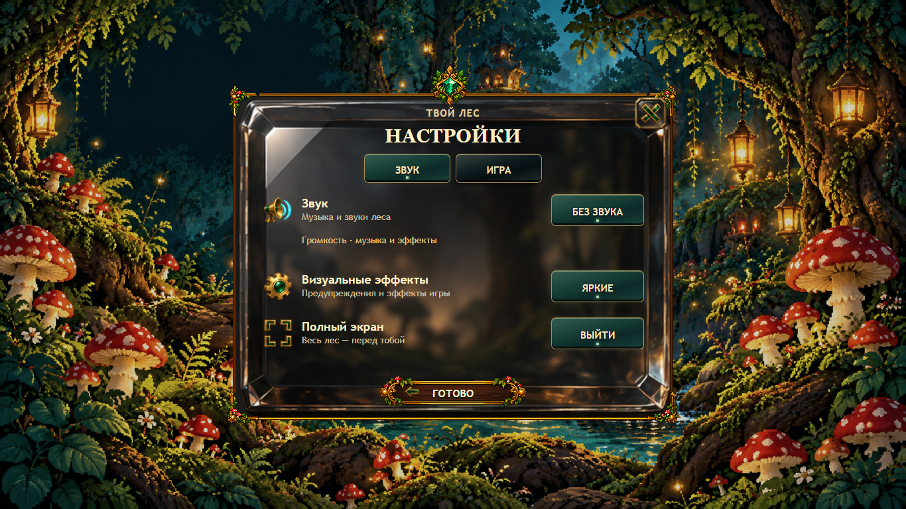
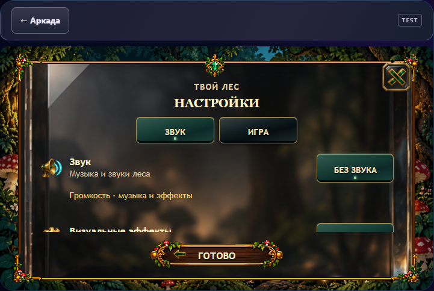
Активная вкладка и состояния получают сдержанный emerald inset; старые плоские зелёные backing и разделитель строк отключены.
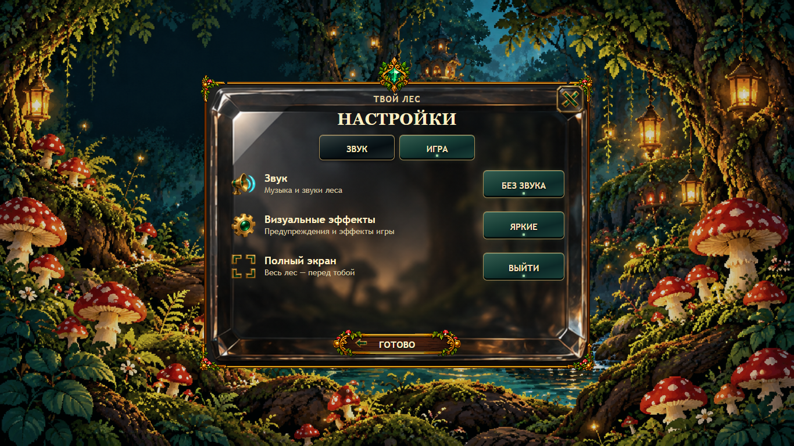
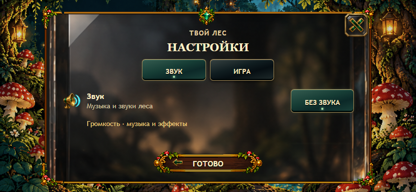
CYAN = icon bounds, PINK = label bounds. Center delta ≤1 CSS px (measured 0).
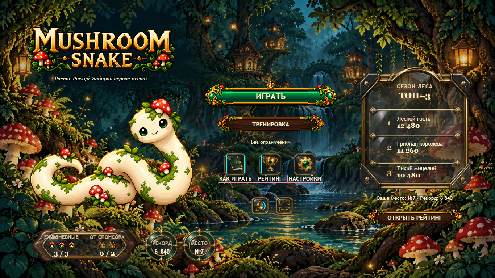
Same PNG: 1536×1024. Container 16:9 + contain caused background strips; cover at 50% 50% removes them. No Fly game or artwork edit.
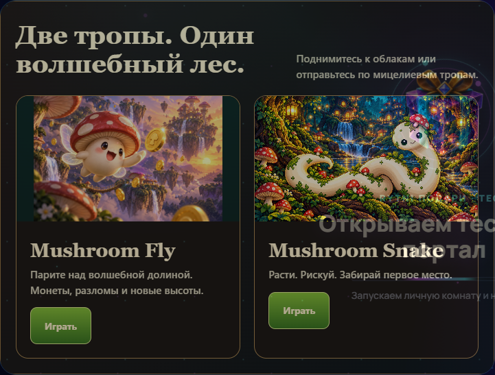
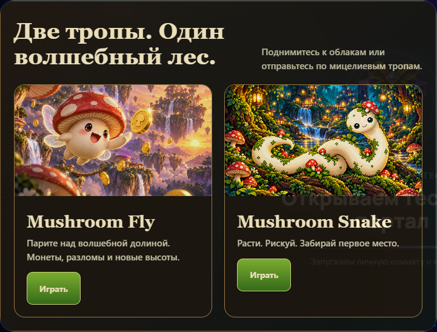
Не опубликовано в TEST. ≥91% base RGB unchanged in targeted cases; primary V4 alpha identical. Human review still required.
Все 9 эффектов + combinations в реальном размере · Straight / turn / moving fixture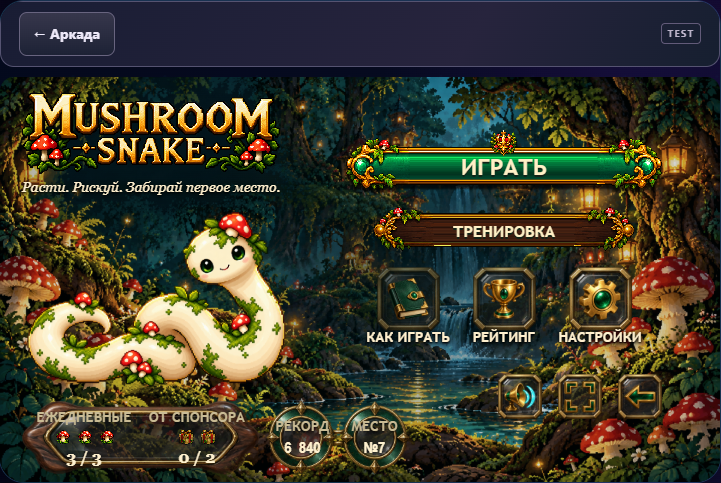
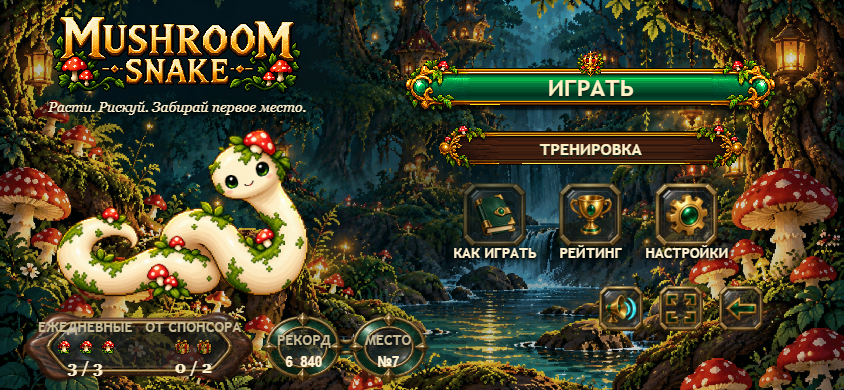